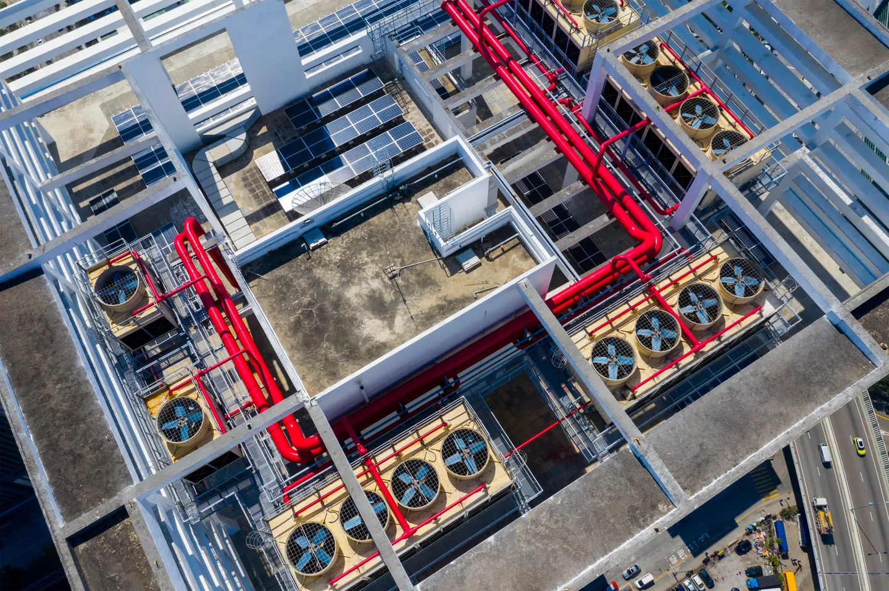
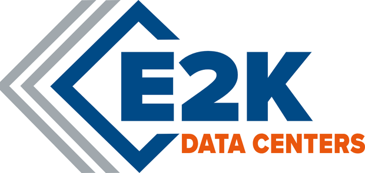
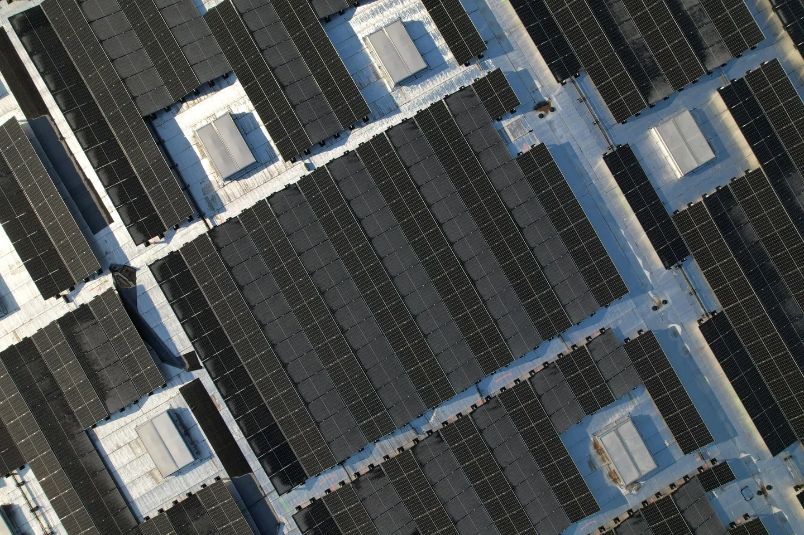
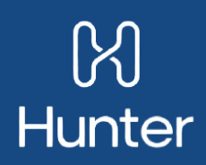

People & safety
Put people at the centre of the project, with health, safety and environmental considerations informing planning and site decisions.
We build your business
↓Our commitment is simple: doing the right things, doing them right the first time, and delivering with confidence.
E2K Data Centers acts as the specialist General Contractor, overseeing the entire project lifecycle, from design development and planning to construction, commissioning and final handover.
We coordinate all project stakeholders, specialist contractors and technical partners, with a strong focus on safety, quality, scheduling, cost control and risk management.
Discover E2K Group ↗

26 Years of construction experienceWe combine E2K Group’s construction expertise with dedicated capabilities in Data Center Design & Build, delivering complex, high-performance infrastructures tailored to the demands of the digital economy.
With over 25 years of experience in the European construction industry, E2K Group acts as your trusted general contractor, delivering turnkey solutions and coordinating every stage of your project.
A simple philosophy that shapes how we design, collaborate and build.
Put people at the centre of the project, with health, safety and environmental considerations informing planning and site decisions.
Define requirements early. Coordinate the details. Approach construction and documentation with a first-time-right mindset.
Build lasting relationships with clients and specialist partners through open communication and a shared understanding of the project.
Connect E2K Group’s construction experience and international presence with the specific demands of digital infrastructure.
From the right site to a coordinated handover. Explore the stages of our design and build approach.
Assess potential sites for technical feasibility, regulatory constraints and development risks.
Translate the client’s requirements and site constraints into a feasibility study and a preliminary design.
Coordinate architectural, structural, mechanical, electrical and plumbing design with the client and technical specialists.
Coordinate planning and environmental submissions, liaise with authorities and manage the grid connection process.
Coordinate civil, structural and MEP works, site infrastructure, procurement, logistics and construction delivery.
Plan and coordinate systems testing, support the certification process and prepare the documentation needed for handover.
Coordinate technical support and facility management after handover.

Responsible construction starts with the decisions we make today. Discover E2K’s approach to buildings, environmental impact and social responsibility.
Explore the group’s approach ↗
Developing a safety management system takes specialist expertise. E2K Data Centers has partnered with Hunter Safety Group, a health, safety and environmental management consultancy.
We differentiate ourselves through transparency, proactive design and rigorous cost control. By anticipating risks, optimising budgets and delivering smart engineering solutions, we prevent unnecessary changes and costly surprises. Our goal is to build long-term client partnerships based on trust, performance and mutual commitment.